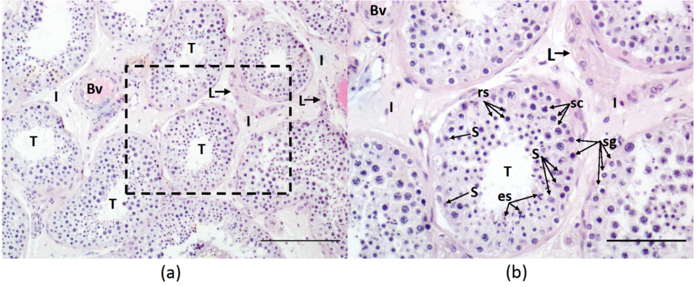
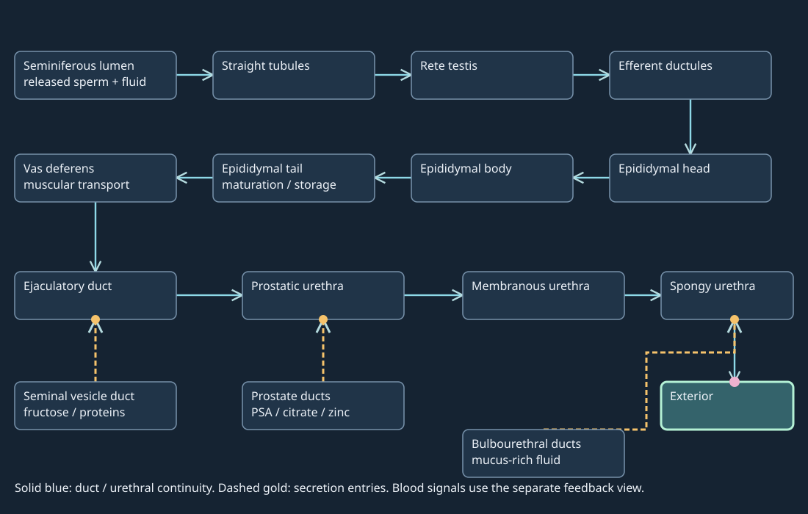
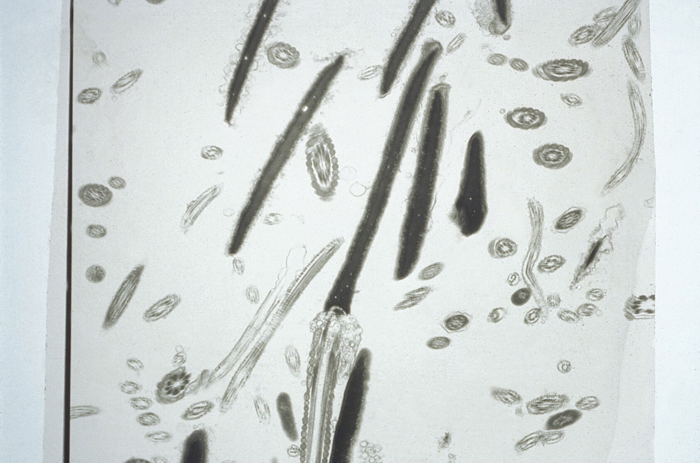
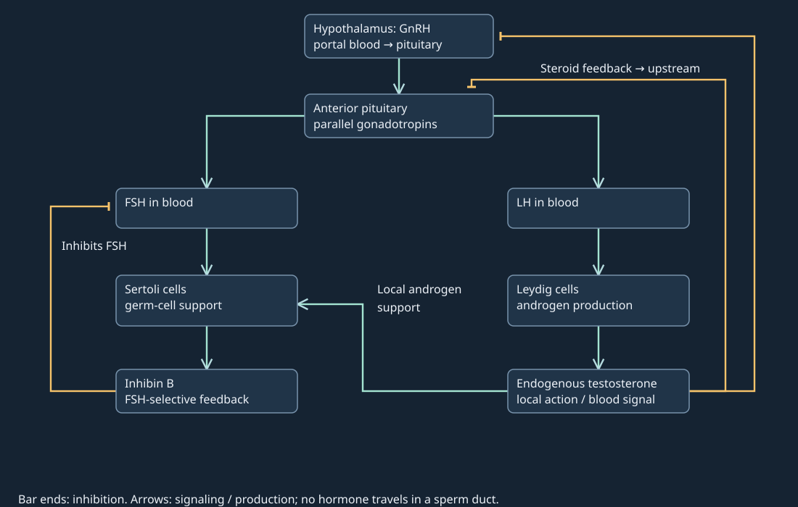

18. Male reproduction and spermatogenesis
A semen sample has an appreciable fluid volume, yet contains no detected sperm. Another sample contains sperm but has a low concentration after dilution. A third person has a high circulating testosterone concentration while sperm production is suppressed. These observations challenge three tempting identifications: semen with sperm, concentration with production, and blood hormone concentration with the local environment supporting germ cells. A useful explanation must locate the cells, distinguish the routes and track what changes during development.
The recurring model has three layers: a developing germ-cell lineage inside seminiferous epithelium, a duct system carrying released sperm with added gland secretions, and a bloodborne signaling network regulating testicular support. Cell counts and DNA (deoxyribonucleic acid) content can be audited within a stated cohort. Neither a duct diagram nor a feedback equation supplies an individual's fertility prediction.
18.1 Anatomy separates production from delivery L41 01:06
A gamete is a reproductive cell carrying one chromosome set; the male gamete is the spermatozoon, usually shortened to sperm. The testis, plural testes, is a gonad that produces sperm and steroid hormones. Its two outputs take different routes. Semen is the ejaculate formed from fluid passing through the reproductive ducts and secretions of the accessory glands; it ordinarily contains sperm, but a semen sample can have no detected sperm. Most of its fluid does not originate as sperm cells. Thus preservation of fluid output does not establish preservation of gamete output.
The testes lie in the scrotum, the skin-covered sac outside the main abdominopelvic cavity. The penis and scrotum are external genital structures; the testes are scrotal organs even when an organ inventory groups them with internal reproductive structures. The epididymides lie along the posterior aspect of the testes. Ducts ascend toward the pelvis, while accessory glands join the downstream route near the urinary bladder and urethra. The bladder stores urine; it is a landmark and an upstream urinary connection, not a sperm-production chamber.
A testicular section has a wall, a lumen and an interstitium L41 03:43
The tunica albuginea is the tough connective-tissue capsule surrounding the testis. Septa extending inward incompletely divide the organ into lobules containing coiled seminiferous tubules. The tunica vaginalis is a serous covering with visceral and parietal layers and a potential fluid-containing space between them; it covers much of the testis but reflects near the posterior attachment. Its slippery surfaces limit friction. It is not a rough cellular filter through which sperm normally leave. These layers and the small ducts are checked against the Endotext testicular-anatomy account; its permission-restricted figures are not copied.
The seminiferous epithelium is the cellular wall of each sperm-producing tubule. It contains developing germ cells and supporting Sertoli cells. A basement membrane supports its outer boundary. The lumen is the inner fluid space into which late spermatozoa are released. The interstitium is the tissue and extracellular space between tubules; it contains vessels and Leydig cells, the steroid-producing cells. A Leydig cell is not a germ cell drifting inside the tubule. Testosterone reaches nearby testicular targets and the circulation rather than traveling as a sperm through the whole duct system.
Sertoli cells extend from the basal boundary toward the lumen and support several germ-cell generations. Junctions between neighboring Sertoli cells divide a basal region from a regulated adluminal compartment, meaning the region toward the lumen within the epithelium. These junctions contribute to the blood–testis barrier. The name does not place its principal junctions in the capillary wall. Developing cells cross a remodeled epithelial junctional boundary; they do not develop entirely as free cells in the lumen. Barrier regulation and immune tolerance involve more than a single impermeable seal. The original sectional map below resolves compartments without pretending to show every interlocking Sertoli process.

This representative biopsy is from the study’s obstructive-azoospermia group with complete spermatogenesis. It is not healthy-volunteer or proven-fertile tissue. The cohort was 23–41 years old; the pictured individual’s age is not assigned. Ordinary H&E does not demonstrate blood–testis junction sealing, molecular transport, cell ploidy or stage duration.
Walczak-Jędrzejowska et al. (2022), Expression of G-Protein-Coupled Estrogen Receptor in Whole Testicular Tissue and Laser-Capture Microdissected Testicular Compartments of Men with Normal and Aberrant Spermatogenesis, Biology 11:373, Figure 1(a,b). © Authors; CC BY 4.0. Exact native top-row crop; unrelated panels (c–f) omitted. No pixel retouch, colour grading, new label or calibration. Source and extraction record · Reproduction record.
Maturation and muscular transport occur downstream L41 06:54
Released sperm enter straight tubules, or tubuli recti, then the rete testis, an interconnected duct network, and the efferent ductules. The ductules deliver them into the epididymis, a highly coiled duct organized into head, body and tail. The epididymal environment changes sperm membrane proteins, lipids and functional properties. Sperm acquire capacities needed for motility and fertilization; the tail provides a major storage region. A drawing of a short curved organ should not be interpreted as the uncoiled duct length. Human references give a several-meter duct, but no exact length is needed for the transport argument.
Epididymal maturation follows testicular development. Capacitation refers to later functional changes that prepare sperm for fertilization in the female tract or suitable experimental conditions. Neither is synonymous with the shaping of spermatids inside the testis. Fluid flow, epithelial handling and muscular contractions contribute to transport; a mature-looking flagellum does not imply that sperm swim unaided through every male duct. The NCI duct description establishes the head-to-tail connection and the muscular route, without supplying a fixed storage lifetime.
The ductus deferens, also called the vas deferens, continues from the epididymal tail. It ascends in the spermatic cord through the inguinal canal and then passes toward the posterior bladder. The spermatic cord is a bundle containing the vas, vessels, nerves and other supporting structures; it is not a single common lumen carrying sperm and blood. Each vas joins the duct from its associated seminal vesicle to form an ejaculatory duct. The paired ejaculatory ducts traverse the prostate and empty into the prostatic urethra. Prostatic secretions enter by their own short ducts. Bulbourethral secretions enter the spongy, or penile, urethra farther downstream.
This branching topology explains the running case. A blocked or absent vas can prevent delivery despite sperm formation upstream. Accessory glands can still add fluid downstream. The sperm route does not run serially through seminal-vesicle tissue, prostate tissue and bulbourethral tissue as three processing chambers. Gland ducts add secretions to an existing route. Bloodborne FSH or LH likewise does not need to enter the vas to reach its testicular target.
Accessory glands change the mixture L41 09:59
The paired seminal vesicles are secretory glands behind the bladder, rather than sperm-storage bags through which sperm must pass. They contribute fructose, prostaglandins and proteins involved in the post-ejaculatory gel. Fructose is a metabolizable substrate; prostaglandins are lipid signaling molecules; coagulating proteins alter the physical mixture. An energy source, a signal and a matrix-forming protein perform different jobs. Their presence does not guarantee successful transport or fertilization. The NCI accessory-gland account supports these identities and duct entry points.
The prostate is one gland beneath the bladder surrounding the proximal urethra. Its lobes do not make it a paired organ. It contributes citrate, zinc and enzymes including prostate-specific antigen (PSA), an enzyme that cleaves protein substrates, and prostatic acid phosphatase (PAP). PSA-mediated cleavage of gel-forming semenogelins contributes to liquefaction, the return toward a less gel-like state after ejaculation. A protease changes a protein substrate; it does not manufacture additional sperm. Prostatic and vesicular contributions vary among fractions and samples, so the source's approximate 70% and 20–30% are not imposed as an exact universal partition. Bulk semen pH also does not identify the pH of every gland's secretion, and some simplified textbooks disagree about isolated prostatic fluid. No pH-based diagnostic rule is used here.
A narrow research distinction matters for PAP. Hydrolysis of phosphocholine can release choline and phosphate. However, Hanley's 2023 PAP mini-review, abstract and conclusion, explicitly proposes a choline/cholinergic-signaling role in motility as a hypothesis assembled from multiple findings. The chemical capacity is not a demonstrated complete human motility-control chain. It is therefore retained as a proposed mechanism, rather than promoted to the routine explanation that PAP necessarily produces the choline driving each sperm.
The paired bulbourethral glands, or Cowper glands, add mucus-rich fluid associated with arousal and urethral lubrication. Their contribution precedes or accompanies downstream semen passage; it is not an extra spermatogenic step. This description cannot establish that a pre-ejaculatory sample contains no sperm, prevents infection or is a dependable contraceptive. Emission moves sperm-containing material and secretions into the proximal urethral route. Expulsive ejaculation involves coordinated muscular expulsion. These events differ from erection, which changes vascular filling.
For an original mixture check, let \(N\) be sperm number in millions, \(V\) collected fluid volume in mL and \(c=N/V\) concentration in millions/mL, with \(V>0\). A hypothetical 90 million cells in 3 mL give 30 million/mL. Add 3 mL of sperm-free fluid without losing cells: the volume becomes 6 mL and concentration becomes 15 million/mL, while number remains 90 million. This is dilution, not evidence that production halved. Real samples need collection and measurement context; these invented values are not clinical cutoffs.

Static equivalent: seminiferous lumen → straight tubules → rete testis → efferent ductules → epididymal head/body/tail → vas deferens → ejaculatory duct → prostatic urethra → membranous/spongy urethra → exterior. Vesicle duct joins vas; prostate ducts enter prostatic urethra; bulbourethral ducts enter spongy urethra. Blood is a separate route.
Vascular filling and thermal regulation answer different questions L41 16:46
The penis has an attached root, a shaft and a distal glans. The foreskin, when present, covers the glans. Two corpora cavernosa and one corpus spongiosum are erectile tissue columns; the spongiosum surrounds the penile urethra and continues into the glans. The urethra has urinary and reproductive roles, but it does not connect the bladder to a seminiferous lumen as an ordinary urine path.
Erection is a neurovascular response. Nitric oxide released in the erectile system activates soluble guanylyl cyclase, increasing cyclic guanosine monophosphate (cGMP) signaling and promoting smooth-muscle relaxation. Arterial inflow and expansion of vascular spaces increase, while expansion against the surrounding envelope reduces venous escape. Thus relaxation can increase organ rigidity: the relaxing component is smooth muscle controlling a blood-filled structure. The Endotext physiological erection section supports this causal sequence. It supplies no personal drug recommendation here. Erection does not prove sperm production, and ejaculation does not require a new cohort to complete meiosis at that instant.
The scrotal skin, dartos smooth muscle, cremaster muscle and vascular heat exchange contribute to temperature regulation. The pampiniform plexus is a venous network associated with the incoming artery; countercurrent heat exchange can cool arterial supply using cooler returning blood. Muscular position and skin-surface changes influence exchange with the surroundings. Scrotal-surface, intratesticular, core and ambient temperatures are different measurements. A single “34–35°C optimum” cannot be assigned to all of them under all conditions.
The closing thermal question concerns prolonged exposure of a normally cooler sperm-producing organ to a warmer environment. Heat can impair developing germ cells and later semen parameters; magnitude and reversibility depend on exposure, duration, developmental stage and other conditions. A prospective human heating study, abstract reported changes after a controlled exposure with recovery observation. Its experimental conditions do not define a safe exposure challenge, an everyday clothing effect or an individual's recovery deadline. Being outside the main cavity helps maintain a thermal differential; it is not a guarantee that temperature is always optimal or that brief warming necessarily causes infertility.
A secretion marker cannot establish consent L41 19:22
Fructose in vesicular secretion does not make a sugar-positive sample proof of semen, a particular person's contribution or sexual assault. Those are progressively different propositions. The source's caption claim that fructose alone proves assault is excluded; the bounded slide audit also records an explicit warning against that conclusion. No forensic specificity or sensitivity for a fructose assay was verified here. An official Georgia forensic laboratory description instead separates sperm microscopy, testing other seminal components and DNA typing. Each result has assay and sampling limits.
Even identified semen or a DNA contributor does not alone establish the circumstances of contact or consent. The NIJ/OJP evidence discussion gives a concrete case in which semen DNA did not resolve the disputed issue of consent. This distinction is an inference boundary, not an alternative forensic protocol. The same logic recurs in physiology: identifying one constituent does not identify every upstream process that produced the final mixture.
18.2 Cell identity, chromosome sets and DNA content L42 01:13
Spermatogenesis comprises precursor proliferation, meiotic divisions and differentiation into spermatozoa within seminiferous epithelium. A spermatogonium is a germ-cell precursor near the basal boundary. Stem/progenitor populations sustain the lineage while other descendants commit to differentiation. Mitosis partitions replicated chromosomes between daughter cells without the chromosome-set reduction characteristic of meiosis. Continuing production therefore requires both renewal and commitment; converting every stem cell immediately into a terminal product would exhaust the source.
Type A and type B are traditional spermatogonial classifications. Human/primate type A dark and pale categories are based on morphology and should not be copied unmodified from rodent single/paired/aligned classifications. Molecular states and regenerative behavior make a one-label/one-immutable-fate picture too simple. This chapter uses the functional distinction between retained precursor capacity and a committed meiotic cohort. It does not infer that every stem-cell division yields exactly one stem cell and one primary spermatocyte.
A primary spermatocyte enters the meiotic program; after the first division its daughters are secondary spermatocytes. After the second division the products are round spermatids. The important bookkeeping question is what each cell contains at a specified boundary. A cell in DNA replication or chromosome segregation cannot always be assigned the same simple integer state as a completed interphase nucleus. Figure 18.4 therefore reports states before S phase, after S phase and after completed divisions, rather than inventing continuous changes in integer ploidy.
Replication changes DNA amount before meiosis changes ploidy L42 05:12
A chromosome is an organized DNA–protein structure; chromosome counts conventionally follow centromeric units. A centromere is the chromosome region associated with its segregation apparatus; before sister separation, joined sisters are counted as one replicated chromosome. A replicated chromosome contains two sister chromatids joined before their separation. A homologous pair contains corresponding maternal- and paternal-origin chromosomes, which can carry different sequence variants. Homologs and sisters are different relationships. Human X and Y pair through limited homologous regions rather than being identical homologs along their full lengths.
Ploidy counts chromosome sets. Write \(n\) for one set and \(2n\) for two; in the standard human count one set contains 23 chromosomes. Separately, \(C\) denotes DNA content relative to a nominal unreplicated haploid genome. The symbol is a DNA-content class, not a chromosome number, and exact DNA mass differs with sequence and sex-chromosome complement. Before premeiotic S phase, the DNA-synthesis phase, a diploid precursor is \(2n,2C\). Replication produces a post-S primary spermatocyte with \(2n,4C\): 46 chromosomes and 92 chromatids. The additional DNA copies do not create four homologous sets.
During prophase I, homologs associate and exchange corresponding segments through crossing over between nonsister chromatids. This changes combinations of variants without requiring another whole-genome replication. During meiosis I, homologs segregate to opposite daughter cells while sisters remain associated. Each completed secondary cell has one member of each homologous pair: \(n,2C\), with 23 chromosomes and 46 chromatids. A haploid cell can therefore contain replicated chromosomes and twice the nominal haploid DNA amount.
There is no intervening S phase before meiosis II. Sister chromatids separate and become the daughter chromosomes. Each completed round spermatid is \(n,1C\), with 23 chromosomes and 23 chromatids. The whole dividing cell's transient anaphase chromosome count differs from the completed daughter's count; the table consistently names the daughter-state boundary. The OpenStax meiosis account supplies the replication/segregation sequence. Its occasional loose chromosome-copy language is resolved here by separately counting sets, centromeres and chromatids.
| Completed boundary | Cells in cohort | Per cell | Human chromosomes / chromatids per cell | Cohort DNA class |
|---|---|---|---|---|
| Pre-S precursor | 1 | 2n, 2C | 46 / 46 | 2C |
| Post-S primary | 1 | 2n, 4C | 46 / 92 | 4C |
| Meiosis I completed | 2 | n, 2C | 23 / 46 | 4C |
| Meiosis II completed | 4 | n, 1C | 23 / 23 | 4C |
| Shaping and release | 4 | n, 1C | 23 / 23 | 4C |
The aggregate DNA content doubles during S phase and is then redistributed across the four products. Chromosome count summed over cells is not the same conserved quantity: when sisters separate, they acquire independent chromosome identity. Nor can ploidy labels simply be added as if “four haploid cells” meant one tetraploid nucleus. The location of each set matters. This is the reason for keeping cell number, per-cell chromosome sets and DNA content in different columns.
For 100 ideal post-S primary cells, meiosis I gives 200 secondary cells and meiosis II gives 400 spermatids. The nominal total DNA remains 400C after replication. This is a conditional lineage calculation, not an estimate of human daily output. Death, failed progression and earlier amplification alter yield. In an explicitly synthetic attrition example, 90% of primary cells complete meiosis I, 80% of secondary cells complete meiosis II, and 75% of spermatids survive the chosen shaping boundary. The counts become 180, 288 and 216. Lost DNA must be included: 40C, 72C and 72C leave the tracked viable lineage, totaling 184C; 216C remains in final cells. Together they account for the initial 400C.
| Completed state | Cells | Ploidy per cell | Chromosomes per cell | Chromatids per cell | DNA per cell | Lineage DNA |
|---|---|---|---|---|---|---|
| Before S | 1 | 2n | 46 | 46 | 2C | 2C |
| After S: primary spermatocyte | 1 | 2n | 46 | 92 | 4C | 4C |
| After meiosis I: secondary spermatocytes | 2 | n | 23 | 46 | 2C | 4C |
| After meiosis II: spermatids | 4 | n | 23 | 23 | 1C | 4C |
Open the controlled quantitative lab in its full reference view
Open the controlled quantitative lab
Shaping, release and functional maturation are distinct L42 06:45
Spermiogenesis transforms round spermatids into elongated spermatozoa without another cell division or chromosome-set reduction. The nucleus condenses and changes shape; the acrosomal cap develops; the flagellum and mitochondrial midpiece organize; excess cytoplasm is removed with Sertoli-cell participation. Spermiation is release from Sertoli support into the tubule lumen. Epididymal maturation follows downstream. Describing all three as “maturation” without naming the compartment would make a released testicular sperm equivalent to a fully fertilization-ready ejaculated cell.
Asynchronous cohorts allow sustained output. A tubule section contains cells at several developmental stages, and human cellular associations are more complex than a single synchronized ring advancing as one unit. The controlled figure follows one ideal lineage to explain ordering; it does not portray all cells of one testis proceeding through S phase simultaneously. The Endotext spermatogenesis sections distinguish stages, cycles and spatial organization, including species differences. Its use of “tetraploid” in a DNA-synthesis sentence is not adopted as a chromosome-set designation: the explicit post-S state here remains 2n/4C.
A sperm head, midpiece and flagellum have different tasks L42 13:32
The head contains a condensed haploid nucleus and an acrosome, a membrane-bounded specialized secretory structure associated with the anterior head. The midpiece contains an organized mitochondrial sheath. The flagellum contains a microtubule-based apparatus and accessory structures supporting bending. Adenosine triphosphate (ATP) supplies molecular work. Glycolysis, sugar breakdown outside mitochondria, can supply ATP alongside mitochondrial oxidative metabolism. The 2011 human-sperm incubation study, abstract, directly tests glycolytic contributions under selected laboratory conditions; it does not determine pathway fractions in every in-vivo setting. Abundant mitochondria therefore do not prove they are the sole ATP source. Flagellar movement helps propulsion, but tract fluid and muscular activity also influence transport. A static section cannot establish a swimming speed.

At fertilization, sperm interact with cells of the cumulus/corona surrounding the oocyte and the zona pellucida, an extracellular glycoprotein coat. Acrosomal exocytosis and proteins including acrosin participate in these interactions. The simple account that one enzyme dissolves every covering and guarantees entry is insufficient. Penetrating the zona, fusing with the oocyte membrane and activating the oocyte are separate events. Capacitation is likewise not the same event as acrosomal exocytosis.
A primary human study makes that distinction testable: Hua and colleagues,2023, abstract, reported an ACR variant in two brothers whose sperm failed zona penetration in the investigated setting, with functional assays locating the failure. The authors note the absence of another independent pedigree as a limitation. This finding supports a specific mechanism, not a universal genetic explanation for failed fertilization. Species matter: acrosin-knockout hamster experiments demonstrated a zona-penetration requirement in hamsters; that is not a license to treat every mouse, bovine and human result as identical.
18.3 Feedback regulates support rather than counting storage slots L42 08:23
The hypothalamus releases gonadotropin-releasing hormone (GnRH) into the portal blood connecting it to the anterior pituitary. Pituitary gonadotropes release follicle-stimulating hormone (FSH) and luteinizing hormone (LH). These are parallel outputs with different target-cell receptors. FSH acts on Sertoli cells; LH stimulates Leydig-cell steroid production. GnRH is not a pituitary product or a chemical precursor transformed into LH. Pulse-dependent regulation matters biologically, but the staged graph does not supply a measured pulse frequency.
Testosterone is an androgen, a steroid hormone acting through androgen-signaling mechanisms. Within the testis, androgen action on supporting somatic cells is essential for normal germ-cell development. FSH and androgen support complement one another; LH does not simply substitute for FSH at a Sertoli receptor. Circulating androgen also supports reproductive organs, secondary sexual characteristics, libido and functions in other tissues, including bone and red-cell production. A blood concentration cannot directly specify the intratesticular signaling environment because local production, distribution and metabolism intervene.
Negative feedback means that a downstream response reduces an upstream drive through a specified pathway. Testosterone and signaling related to estradiol, an estrogen formed from androgen, contribute to feedback at hypothalamic and pituitary levels. Sertoli-derived inhibin B feeds back principally on pituitary FSH production, rather than serving as a blanket direct inhibitor of both FSH and LH. The distinction is explicit in the Endotext gonadotropin-regulation section. It corrects the source's storage-full switch account: inhibin is not released only when a universal 10-million/100-million threshold has been crossed, and normal feedback does not routinely halt all spermatogenesis.
Hormones are signals whose effects depend on target responsiveness and other inputs. If inhibin B falls while other relevant influences remain fixed, reduced negative feedback tends to permit greater FSH drive. It does not follow that LH must rise by the same rule. Nor does greater FSH repair a missing Sertoli population automatically. A controller can increase its signal while the controlled tissue lacks capacity to respond. This explains why a high upstream signal can coexist with poor downstream output.

Static equivalent: hypothalamic GnRH→anterior pituitary; FSH→Sertoli support/inhibin B; LH→Leydig testosterone; inhibin B inhibits FSH, while steroid feedback affects hypothalamic/pituitary drive. Exogenous androgen can suppress gonadotropins despite increased systemic androgen. Lower inhibin alone does not specify testosterone direction.
Adding circulating androgen can reduce local production L42 17:00
An exogenous hormone comes from outside the body's endogenous production route. Exogenous androgen can increase systemic androgen signaling while suppressing hypothalamic–pituitary stimulation, reducing LH-dependent intratesticular production and impairing spermatogenesis. This is the mechanism behind the running case's apparently paradoxical high blood testosterone and poor sperm output. It does not imply reliable contraception in every user or justify a treatment regimen. The directly readable AUA/ASRM Part II physiological discussion and statement 40 rejects testosterone monotherapy for men interested in current or future fertility; no dose or individual management advice is supplied here.
Physiological feedback is not itself an endocrine disruptor. That term concerns exogenous agents that interfere with hormone action. Likewise hypothalamic disease, pituitary disease, thyroid dysfunction and direct testicular injury are different possible disturbances, not names for the same missing hormone. A pituitary lesion can impair gonadotropin output without moving the site of GnRH synthesis into the pituitary. A systemic illness may affect several layers simultaneously, which is why an isolated pathway diagram cannot identify a clinical lesion.
A small equilibrium model exposes one inference failure
Consider an original, dimensionless model of two deliberately separated steady feedback loops. Let \(L\) denote a normalized LH-like drive, \(T\) endogenous local androgen output, \(E\) an imposed systemic androgen contribution, and \(T_s=T+E\) the model's systemic signal. Let \(a\) be a nonnegative Leydig-response coefficient. Separately, let \(F\) be FSH-like drive, \(I\) an inhibin-like output and \(b\) its nonnegative response coefficient. All quantities are normalized teaching numbers. They are neither measured concentrations nor probabilities. Fix both uninhibited drives to 2 and impose
\[L=\frac{2}{1+T+E},\qquad T=aL;\qquad F=\frac{2}{1+I},\qquad I=bF.\tag{18.1}\]The first loop represents steroid inhibition of a combined upstream drive; it does not separately simulate GnRH and pituitary pulse processing. The second isolates inhibin feedback while holding its other inputs fixed. Actual steroids can also influence FSH, so this separation is unsuitable for predicting real FSH after androgen administration. The model omits estradiol conversion, receptor dynamics, local concentration gradients, germ-cell dependence of inhibin and any sperm-production law. Its job is a counterexample to the claim that adding a systemic input must increase endogenous local output.
Substituting \(L\) into \(T=aL\) yields \(T(1+T+E)=2a\). The nonnegative equilibrium solves \(T^2+(1+E)T-2a=0\). The negative root is outside the stated domain; the nonnegative root and the corresponding FSH-like equilibrium are
\[T=\frac{4a}{1+E+\sqrt{(1+E)^2+8a}},\qquad F=\frac{4}{1+\sqrt{1+8b}}.\tag{18.2}\]These rationalized forms avoid subtracting nearly equal positive numbers. They include \(a=0\), giving \(T=0\), and \(b=0\), giving \(F=2\). For \(a>0\), differentiating the implicit equation with respect to \(E\), at fixed \(a\), gives
\[\frac{dT}{dE}=-\frac{T}{1+E+2T}<0.\tag{18.3}\]The denominator is positive. Endogenous output therefore falls in this model as the imposed contribution rises. Meanwhile \(d(T+E)/dE=1-T/(1+E+2T)>0\), so the systemic signal rises. The two observations are compatible. With \(a=b=1,E=0\), all five output variables equal 1. Setting \(E=2\) gives \(L=T=0.561553\), yet \(T_s=2.561553\). Those numbers are calculations under a synthetic feedback law, not an effect-size estimate for an androgen dose.
Isolate the inhibin branch instead: reduce \(b\) from 1 to 0.25 with \(a=1,E=0\). The model gives \(F=1.464102\), \(I=0.366025\), while \(L=T=1\) remains unchanged. Altering Leydig responsiveness instead to \(a=0.25\) gives \(T=0.366025\) and \(L=1.464102\). These are two different lesions. Lower inhibin cannot, by itself, select between normal Leydig function and an additional Leydig defect. The closing Sertoli-cell question therefore requires conditional reasoning rather than one obligatory testosterone arrow.
Separate production failure, duct failure and evidence of risk
Azoospermia means no sperm detected in an appropriately examined ejaculate; it does not specify the upstream cause. In obstructive cases, production may persist but the delivery route is interrupted. In nonobstructive cases, impaired production is central. A genetic label, a hormone value or a fluid volume alone cannot establish the complete classification. The AUA/ASRM evaluation account also emphasizes that semen parameters vary and do not individually determine fertility.
Three genetic examples locate different failures. Klinefelter syndrome, commonly 47,XXY (47 chromosomes, including two X and one Y), is associated with primary testicular insufficiency and variable features; it is not a consequence of ejaculating a duplicated sperm. Y-chromosome microdeletions can remove regions important for sperm production, with consequences depending on the deleted region. In contrast, congenital bilateral absence of the vas deferens, often associated with CFTR variants, can prevent sperm reaching semen despite functioning testes. Not every affected person has the full systemic cystic-fibrosis phenotype, and not every case is explained by CFTR. These are mechanism examples, not diagnostic criteria or personal inheritance predictions.
Infection can injure a duct, a testis or both. Epididymitis is inflammation of the epididymis; orchitis involves testicular tissue. The CDC account identifies chlamydial/gonococcal and other etiologies and possible complications, while the testicular reference distinguishes mumps-associated isolated orchitis from bacterial disease often involving the epididymis. Inflammation and subsequent scarring can compromise delivery, whereas germ-cell or supporting-cell injury compromises production. Neither infection name guarantees sterility. A varicocele is dilation of veins in the spermatic venous network; its possible reproductive consequences involve a different vascular setting. The guideline's varicocele discussion does not make every imaging finding an indication for repair.
| Source category | Retained scientific question | Boundary |
|---|---|---|
| Lead, mercury, cadmium, arsenic; ionizing radiation | Can a defined exposure damage germ cells/support or alter DNA? | Dose, route, duration, developmental stage and species are essential. No comparative human risk coefficient is assigned here. |
| Pesticides/herbicides, industrial agents, plastics/BPA; air pollution | Which measured agent and endpoint support endocrine or direct cellular effects? | Exposure mixtures and observational associations do not establish an identical mechanism for every compound. |
| Saunas/hot tubs, tight clothing, prolonged sitting | Was scrotal or testicular temperature actually changed, for how long? | Controlled heating evidence cannot simply be transferred to every daily habit; no garment or sitting-time infertility rule is inferred. |
| Smoking, chronic heavy alcohol, obesity, stress, dietary inadequacy | Do semen measures, hormone changes and actual reproductive outcomes agree? | Confounding, exposure definition and study quality differ. No single supplement or lifestyle cure follows. |
| Advancing age | How do production, DNA integrity and reproductive outcomes vary? | No universal age of sperm cessation or individual probability is assigned. |
The source survey is retained as a set of mechanisms and evidence questions, with unsupported universal claims disposed of rather than repeated. The guideline's risk-factor section specifically notes limited evidence for many lifestyle/environmental factors. No separately verified quantitative causal claim was obtained here for every named metal, pesticide, clothing choice, stress state or dietary deficiency. “Semen quality,” sperm production, successful fertilization and live birth are different endpoints; an association in one does not establish the magnitude or mechanism of another.
A developmental duration needs a start and an endpoint L42 22:34
The approximately 74-day human estimate concerns development from a committed spermatogonial pathway through spermiation under a particular stage-accounting convention. It is not a universal stopwatch from any stem cell to a fertilizing sperm in another person's tract. A seminiferous epithelial cycle is the recurring local association of cell stages, not the entire precursor-to-release duration. Several cycles are required by one lineage. Numerically,4.6 cycles of 16 days give 73.6 days, explaining the conventional rounded value without assigning equal durations to mitosis, meiosis and shaping.
The evidence has historical and methodological limits. Heller and Clermont's 1963 human biopsy-labeling abstract estimated about 64 days under its reported accounting. Amann's duration discussion explains the additional committed-spermatogonial interval behind the conventional approximately 74-day estimate and notes the limits of the classic data. The starting cell definition matters. Epididymal transit/storage adds a distinct downstream interval; the timing of an exposure's appearance in semen also depends on which cohorts and compartments were affected.
Consequently an immediate semen observation can reflect stored sperm made earlier, while later observations may reflect developing cohorts exposed previously. This does not prove that every toxin effect appears only after 74 days or that every recovery is complete after one cycle. The animation's 24-second presentation duration is chosen for reading and seeking, with no linear conversion to days. It teaches event order, not reproductive scheduling or a diagnostic waiting rule.
18.4 Reproduce the bookkeeping and challenge its assumptions
The standard-library Chapter 18 Python program implements the completed-stage table, conditional cohort attrition, dilution and the two equilibrium loops. Its inputs are nonnegative finite cohort size, survival fractions in [0,1], positive mixture volume and bounded nonnegative normalized feedback parameters. Noninteger cohort outputs represent expectations across a large population, not fractional individual cells. Invalid/nonfinite inputs are rejected. Running the file writes deterministic figure data and computed values; it has no network or patient-record access.
For \(M\) post-S primary cells and conditional survival fractions \(p_1,p_2,p_3\), the three downstream counts are \(2Mp_1\), \(4Mp_1p_2\), and \(4Mp_1p_2p_3\). This multiplication uses conditional progression, so it does not require statistically independent survival events. DNA removed at the three boundaries is \(4M(1-p_1)\), \(4Mp_1(1-p_2)\) and \(4Mp_1p_2(1-p_3)\), in nominal C-equivalents. Adding those terms to final viable DNA gives
\[4M(1-p_1)+4Mp_1(1-p_2)+4Mp_1p_2(1-p_3)+4Mp_1p_2p_3=4M.\tag{18.4}\]Cancellation exposes each transfer into a discarded-DNA pool. The surviving cell count alone falls without DNA vanishing from the model boundary. The program reproduces 216 final cells and 184 discarded C-equivalents from the selected 100-cell cohort. Setting every survival fraction to 1 gives 400 products and zero discarded DNA; setting an early fraction to 0 prevents downstream products. These limits test the bookkeeping. They do not estimate apoptosis or sperm yield in a real testis.
The feedback solver substitutes its outputs back into(18.1), tests zero-response and zero-inhibition limits and checks the systemic/local contrast as\(E\) increases. Its input bound is a numerical teaching-domain limit, not a biological threshold. No time integration, pulse-fitting, endocrine concentration calibration or fertilization-probability law is present. The animations use the same saved stage counters and the same deterministic state for displayed numbers and geometry; qualitative route highlights are explicitly separate from the computed equilibrium sweep.
18.5 Six problems with fully worked solutions
Problem 18.1. Repair the routes before interpreting the sample
A diagram sends sperm through seminal-vesicle tissue, then prostate tissue, then a Cowper gland, while LH enters the vas to stimulate sperm. Repair the diagram. A synthetic sample contains 90 million sperm in 3 mL; adding 3 mL sperm-free fluid changes its concentration. Does this prove reduced production? Would fructose detection establish assault?
Worked solution
The sperm path begins in seminiferous lumen and continues through straight tubules, rete, efferent ductules and epididymal head/body/tail. Vas deferens carries sperm onward; the seminal-vesicle duct joins the vas to form the ejaculatory duct. That duct enters the prostatic urethra. Separate prostatic ducts add fluid there; separate bulbourethral ducts open into the spongy urethra. The diagram needs branches entering a duct route, not sperm traversing the three gland parenchymas. LH travels in blood to Leydig cells; FSH acts on Sertoli cells. Neither requires luminal entry into vas.
The concentration changes from\(90/3=30\) to\(90/6=15\) million/mL. The inventory remains 90 million. Therefore dilution explains the change without a production change. Conversely, a fluid-containing sperm-negative sample could reflect impaired production, an interrupted route or other collection/measurement context; it does not establish normal production. Fructose is another constituent measurement. No verified assay specificity was supplied, and even semen or contributor DNA would not independently establish consent. A marker identity and the circumstances of an event are different propositions.
Problem 18.2. Audit the four chromosome/DNA states
A student labels a post-S primary spermatocyte 4n/4C and a secondary spermatocyte 2n/2C because both contain replicated DNA. Correct the labels and count chromosomes/chromatids for a single ideal lineage before S phase, after S, after meiosis I and after meiosis II. Identify what is conserved after replication.
Worked solution
Ploidy counts sets; replication copies chromosomes without adding independent homologous sets. The pre-S diploid precursor has 46 chromosomes,46 chromatids and 2n/2C. Post-S primary has 46 chromosomes,92 chromatids and 2n/4C. Completed meiosis I separates homologs, giving two cells each with 23 chromosomes,46 chromatids and n/2C. No new S phase occurs. Completed meiosis II separates sisters, giving four spermatids each with 23 chromosomes,23 chromatids and n/1C.
At the completed boundaries the nominal cohort DNA is 2C before S and 4C at each later step: one×4C, two×2C, four×1C. The post-S aggregate DNA is conserved in the no-loss construction. The sum of chromosome identities over cells changes at sister separation, so “chromosome number is conserved” would be the wrong invariant. Transient anaphase counts and the completed daughter counts also cannot be mixed. Shaping changes nuclear organization, acrosome and flagellum without another ploidy reduction. This calculation follows one committed lineage; it does not imply four sperm for every stem-cell division.
Problem 18.3. Find the missing DNA in an attrition calculation
Start with 100 post-S primary cells. Let 90% complete meiosis I,80% of resulting secondary cells complete meiosis II and 75% of resulting spermatids survive a chosen shaping boundary. Derive final expected number and the DNA removed at every boundary. Why must the percentages be conditional?
Worked solution
Ninety primaries complete the first division and yield 180 secondary cells. The 10 lost primaries contain 4C each, removing 40C. Of 180 secondary cells,144 complete the second division and yield 288 spermatids. The 36 lost secondary cells contain 2C each, removing 72C. Of 288 spermatids,216 survive the last boundary; the 72 lost spermatids contain 1C each, removing 72C. Final viable DNA is 216C and discarded DNA totals\(40+72+72=184C\), giving 400C overall, equal to 100×4C initially.
The general yield is\(4Mp_1p_2p_3\), which here is\(400(0.9)(0.8)(0.75)=216\). Each fraction is conditioned on reaching that boundary. Multiplying three percentages measured in unrelated starting populations would not have this interpretation. The algebra does not need independence because conditional fractions already express the successive populations. If all fractions equal 1, yield is 400 and discarded DNA is 0. If\(p_1=0\), no later products exist and all initial 400C enters the loss pool. Neither an observed 216-cell endpoint nor an ideal 400-cell yield alone identifies which biological stage is responsible in an actual tissue.
Problem 18.4. Derive the androgen counterexample
In(18.1), take\(a=1\). Derive the nonnegative equilibrium for\(T\), compare\(E=0\) with\(E=2\), and show that endogenous and systemic signals can move oppositely. Can this model predict a person's sperm count or FSH response to an androgen dose?
Worked solution
Substitution gives\(T=2/(1+T+E)\), hence\(T^2+(1+E)T-2=0\). The negative root is inadmissible. Rationalization gives\(T=4/[1+E+\sqrt{(1+E)^2+8}]\). For\(E=0\),\(T=L=1\) and\(T_s=1\). For\(E=2\),\(T=L=(\sqrt{17}-3)/2=0.561553\) and\(T_s=T+2=2.561553\).
Implicit differentiation gives\((1+E+2T)dT/dE+T=0\); thus\(dT/dE<0\) for positive\(T\). Adding 1 gives the derivative of\(T_s\), which remains positive because\(T/(1+E+2T)<1\). Endogenous output falls while the systemic sum rises. As imposed\(E\) grows,\(T\) approaches 0 rather than rising without bound. The counterexample establishes a possible consequence of negative feedback under the selected law. No dose/concentration conversion, sperm-production equation or recovery dynamics was supplied. The separate FSH loop holds other drives fixed and omits steroid effects on FSH, so it cannot predict the physiological FSH response to androgen administration. A plotted equilibrium is not a time trajectory.
Problem 18.5. Answer the thermal and duration closing questions
Why does the scrotal location help sperm development? Compare prolonged warming toward core temperature with one brief ambient-temperature observation. Does approximately 74 days mean all semen changes occur exactly then? Propose measurements that would avoid confounding temperature compartments and developmental endpoints.
Worked solution
External location permits a testis-to-core thermal differential through surface heat transfer, muscular positioning and vascular heat exchange. A sustained change can disturb susceptible developing cells, with later effects on ejaculated populations. It does not follow that every brief exposure produces the same injury or that scrotal surface temperature equals intratesticular temperature. Record which compartment is measured, ambient/core conditions, duration and repeated versus isolated exposure. No threshold or challenge regimen follows from this mechanism.
The conventional 74-day estimate uses a committed-spermatogonial-to-spermiation boundary and several epithelial cycles;\(4.6×16=73.6\)days explains the rounding. Earlier precursors, downstream epididymal transit and storage are separate. A sample soon after exposure can include stored cells made previously; later samples include different exposed cohorts. A research design would distinguish testicular stage endpoints from ejaculated sperm measures, include baseline and repeated observations and assess number, motility or DNA endpoints separately. The classic human labeling data and later accounting discussion do not make an exact individual recovery schedule. The controlled 24-second display gives event order only.
Problem 18.6. Solve the isolated Sertoli-cell question without inventing a Leydig lesion L42 22:54
Assume Sertoli support is impaired and inhibin B production falls. What can be inferred about spermatogenesis, FSH, LH and testosterone? Compare reduced\(b\) with reduced\(a\) in the toy model. Then distinguish this lesion from CFTR-associated absent vasa and 47,XXY.
Worked solution
Impaired Sertoli support can impair germ-cell development and release. Reduced inhibin B removes a specific negative-feedback contribution to FSH, so FSH tends to rise if the remaining pituitary and upstream influences can respond. This is not an obligatory matching rise in LH. Testosterone production resides primarily in Leydig cells under LH drive, so its direction cannot be assigned from a Sertoli-injury label alone. In a strict ideal isolated lesion with other interactions held fixed, preserved LH/Leydig function can preserve testosterone. Real lesions may affect local signaling, other cells and upstream regulation; those additional changes require evidence.
With\(a=1,E=0,b=0.25\), the toy FSH equilibrium is\(4/(1+\sqrt3)=1.464102\), inhibin output is 0.366025, while\(L=T=1\). With\(a=0.25,b=1,E=0\), the separate Leydig-response defect gives\(T=0.366025,L=1.464102\). A fall in testosterone is thus a possible result when additional steroid-output impairment is specified, not a logical consequence of reduced inhibin alone. Neither toy computes viable sperm output from FSH.
CFTR-associated bilateral vas absence locates a potential delivery failure even with functioning testes. 47,XXY concerns a chromosomal/testicular-development context with variable primary testicular insufficiency, meaning deficient function originating in the testis. A Y-region deletion is another production-related mechanism, with region-specific consequences. Those examples cannot be diagnosed from one negative sperm finding or one hormone value. The needed additional evidence concerns anatomy, production and endocrine function; no individual investigation or treatment protocol is selected by this exercise.
18.6 Evidence, corrections and reproducibility boundaries
The lecture spine is L41, male reproductive organs and L42, spermatogenesis, in NPTEL Human Physiology, Sudip Mukherjee, IIT (BHU) Varanasi. Complete captions were read through 21:49 and 23:48, including both closing activities and farewells. The separately attributed bounded source-visual audit inspected 92 thirty-second samples and 16 repeat native-frame views. Its slide observations are inherited evidence here; this author does not claim continuous source-video/audio viewing or an independent repetition of those stills.
Source corrections include one prostate; distinct accessory ducts; Sertoli versus interstitial Leydig identity; basal/adluminal development before luminal release; premeiotic replication and separate\(n/C\) counters; hypothalamicGnRH and parallel pituitary outputs; inhibin B'sFSH-selective feedback; and the absence of a universal storage-full switch. The thermal and Sertoli activities are answered conditionally. The forensic-fructose proof, exact universal temperature, fixed production/recovery clock and blanket exposure/lifestyle forecasts are not retained as facts. PAP/choline is labeled a proposed mechanism rather than a fully established causal chain.
External checks were made on 4 November 2026. NCI SEER pages were directly read for duct/gland connections; their simplified semen thresholds and isolated secretion-pH statements are not adopted as diagnostic rules. Relevant Endotext anatomy, germ-cell, barrier and feedback sections were read; its 2026 testis revision and 2022 erection chapter provide expert synthesis, not direct measurements of every assertion. OpenStax meiosis was directly read for replication and segregation. The original human acrosin and heating studies were read at abstract level, as were the hamster acrosin and historical human timing reports; no full-paper access is claimed. The publisher duration discussion was available through owning indexed passages, with later direct retrieval timing out. Species and endpoint limits accompany the claims.
For risk and clinical boundaries, readable ASRM-hosted AUA/ASRM 2021 summary passages were consulted; the amended 2024 AUA PDF request returned 403. No claim to a complete November 2026 guideline review is made. NLM genetics pages support the distinctXXY,Y-deletion andCFTR/duct mechanisms; CDC's etiologic epididymitis passages support infection categories without importing dosing. The PAP owning publisher abstract and indexed conclusion identify its hypothesis status; directPMC access was challenged. NIJ/OJP's directly read abstract and the Georgia laboratory page support the evidence-type distinction, not a fructose-assay validation.
The current observed references are the human testis H&E, independent regional MRI fields, human sperm flow-dish movie and the retained prepared bovine ultrastructure. Their species, clinical context, preparation, scale and timing limits are separate. No micrograph measures the human chromosome counters or a complete duct trajectory. The earlier rabbit/diagram asset records and exact originals are retained for source history. The Python lab still audits stated counts and equilibria; it cannot diagnose a lesion or turn a hormone label into a fertility prediction.
Observed/reference updates on 9 November 2026 use separately credited native primary/owning-source images and movies, with source-specific preparation, rights and timing limits at each figure. The new quantitative labs preserve their declared synthetic assumptions; they are not anatomical measurements or patient predictions. The historical 4 November checks and earlier visual-review records remain bound to their original artifacts. A regional image does not demonstrate unrelated biological mechanisms.